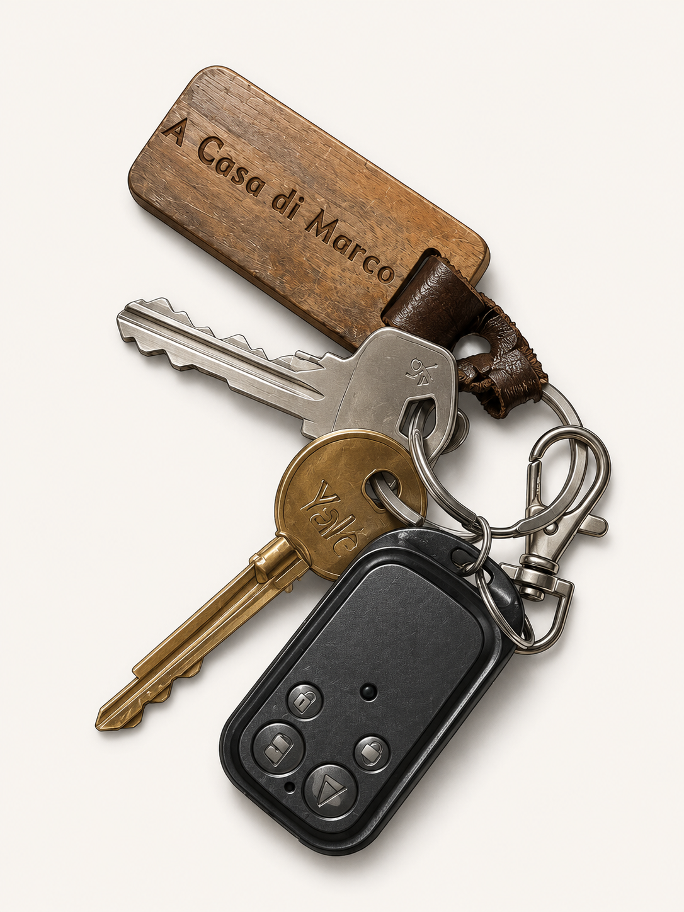
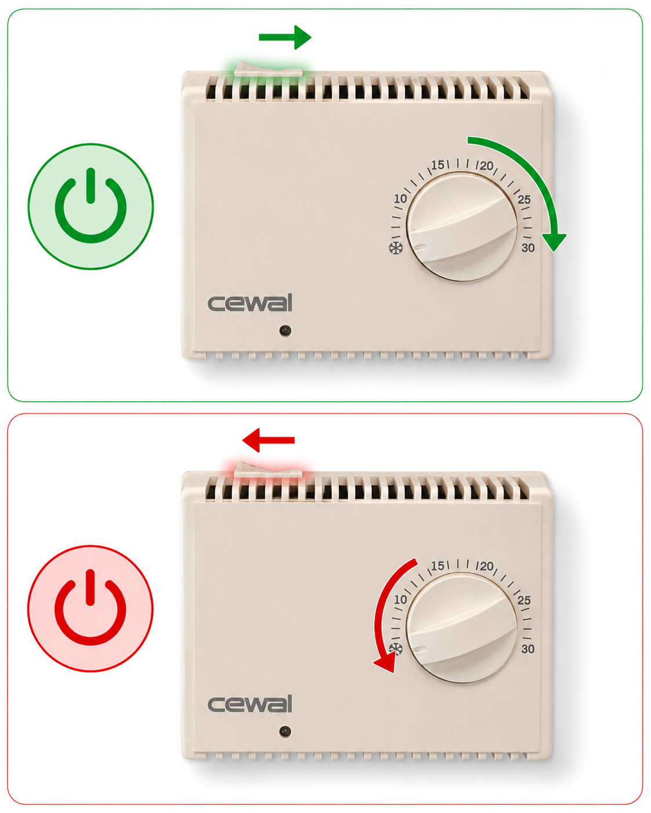
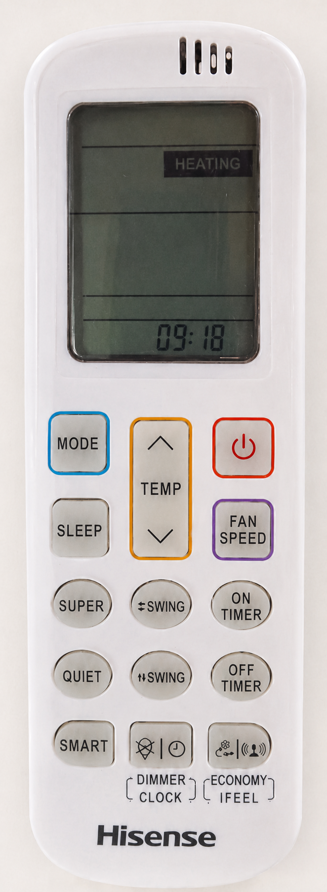
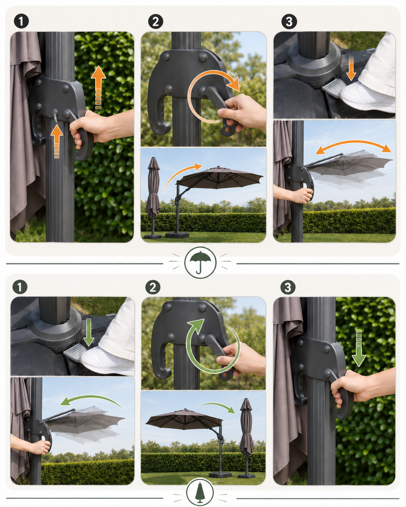
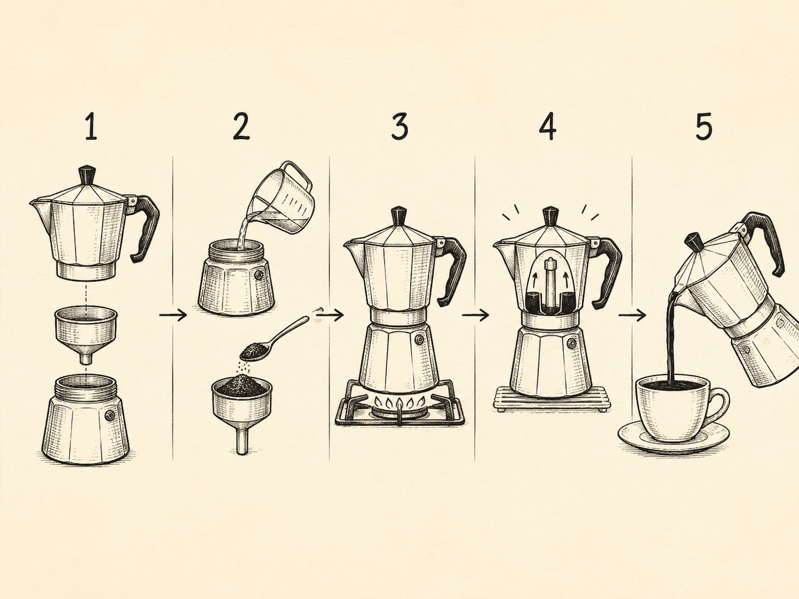
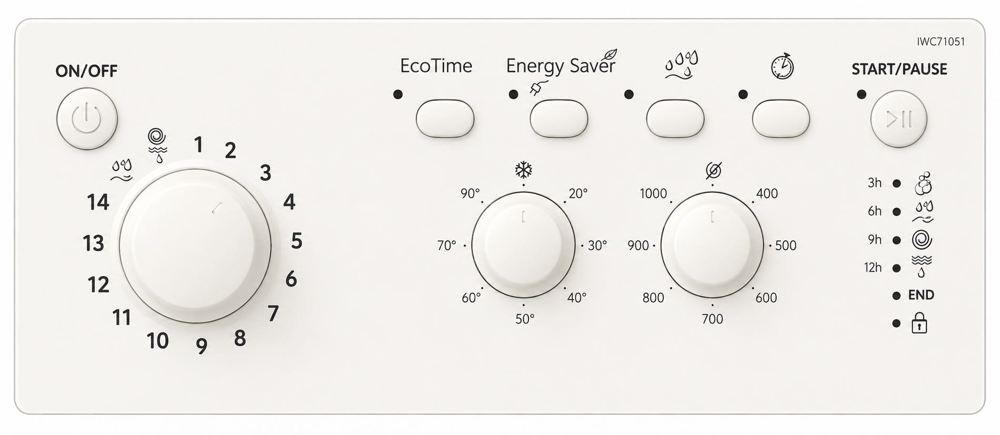
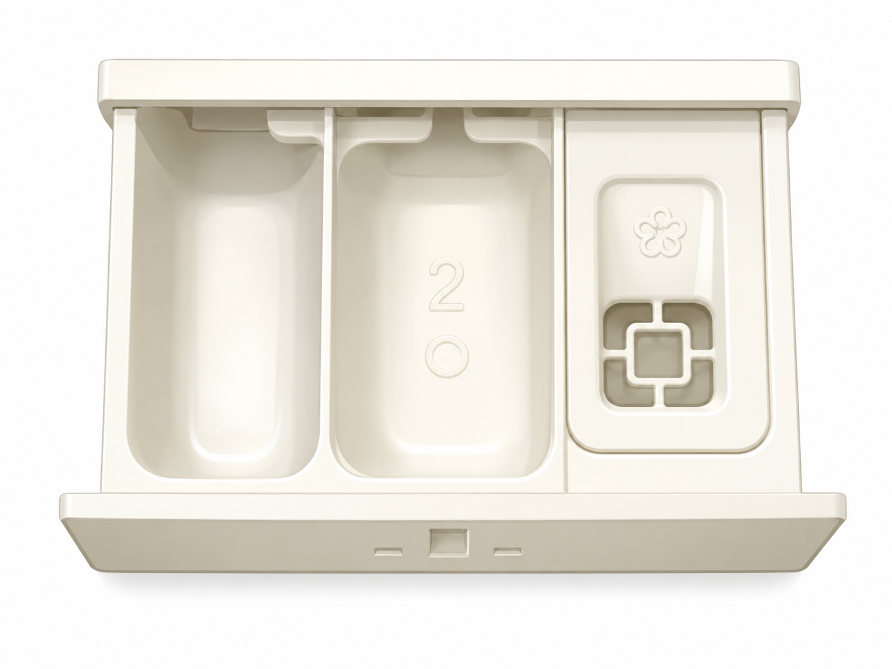
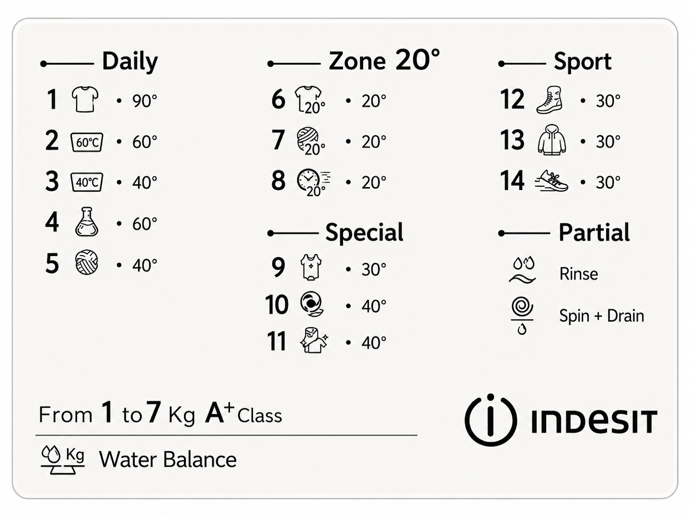
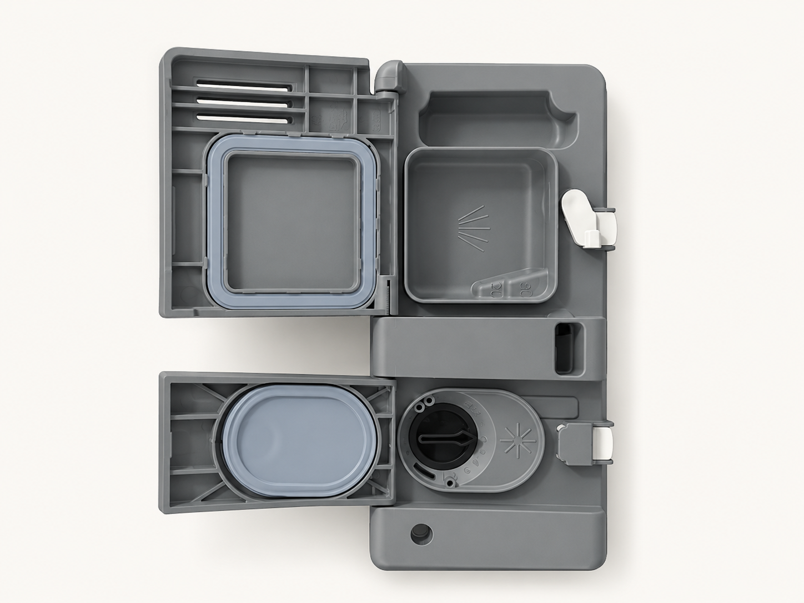
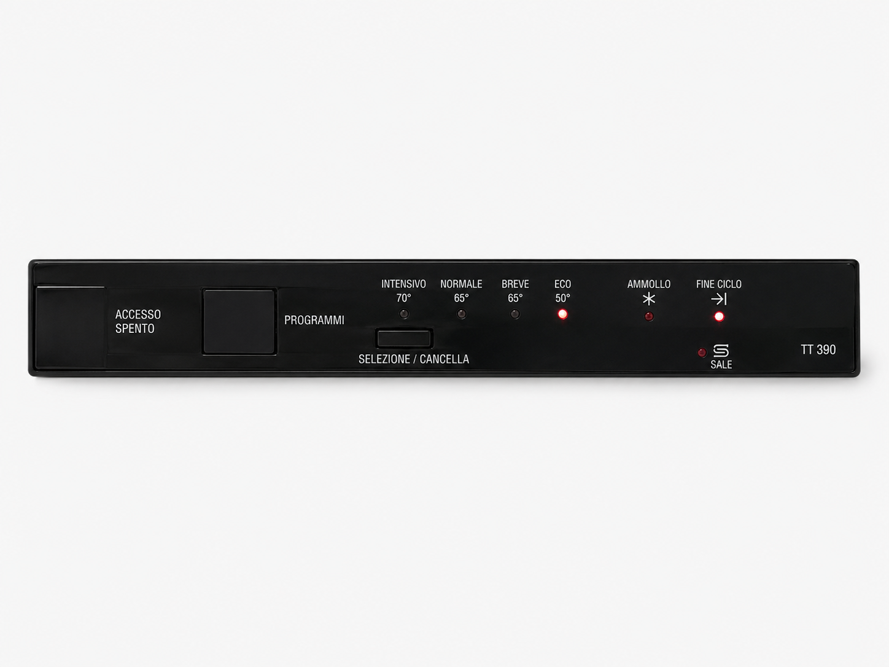

Informazioni utili
In questa pagina trovate le istruzioni pratiche per usare la casa nel modo più semplice possibile: Wi-Fi, raccolta differenziata, clima, riscaldamento, moka e piccoli consigli utili.
Chiavi e telecomando

Telecomando dei cancelli
- Tasto A: apre il cancello della casa, quello che permette di accedere al giardino.
- Tasto B: apre il cancello condominiale.
- Tasti C e D: non hanno nessuna funzionalità per la casa.
Chiave lunga
- La chiave lunga apre la porta della veranda, cioè la porta d’ingresso della casa.
- Per aprire correttamente la porta, inserite la chiave con la parte dritta con lo scalino rivolta verso l’alto.
Altra chiave
- L’altra chiave apre il cancelletto vicino al cancello del giardino.
Wi-Fi
- Se il Wi-Fi non funziona, provate prima a disattivare e riattivare il Wi-Fi dal vostro telefono.
- Se il problema continua, scriveteci su WhatsApp e vi aiuteremo il prima possibile.
Raccolta differenziata
| Categoria | Cosa mettere | Attenzione |
|---|---|---|
| Organico | Scarti di cucina, avanzi di cibo, gusci d’uovo, fondi di caffè e tè, tovaglioli di carta sporchi di cibo. | Usare sacchetti compostabili. Non usare sacchi di plastica. |
| Plastica, acciaio e alluminio | Bottiglie di plastica, vasetti yogurt, flaconi, buste per alimenti, vaschette, lattine, bombolette spray vuote, barattoli, tappi e coperchi. | Non mettere giocattoli, CD/DVD, oggetti in gomma, cavi, tubi, posate di plastica o sacchetti in bioplastica. |
| Carta e cartone | Giornali, riviste, fogli, scatole, imballaggi in cartone, sacchetti di carta, confezioni in cartoncino pulite. | Non mettere scontrini, carta oleata, carta da forno, fazzoletti usati o cartoni sporchi di cibo. |
| Vetro | Bottiglie, vasetti e contenitori in vetro vuoti, senza tappi. | Non mettere bicchieri, specchi, ceramica, porcellana, lampadine, pyrex o vetri di finestre. |
| Indifferenziato | Pannolini, assorbenti, calze di nylon, rasoi, spazzole, carta plastificata, carta da forno, cerotti, gomme da masticare, scontrini. | Non mettere carta, vetro, plastica, organico, pile, farmaci, olio o piccoli elettrodomestici. |
| Farmaci, pile e olio | Farmaci scaduti, pile, batterie e olio vegetale usato non vanno buttati nei normali bidoni. | Vanno conferiti negli appositi contenitori, farmacie, esercizi autorizzati o centri di raccolta. |
A fine soggiorno vi chiediamo gentilmente di raccogliere tutta la spazzatura e di buttarla negli appositi bidoni condominiali, che si trovano accanto al cancello condominiale.
Non lasciate l'organico sotto al lavandino per troppo tempo e non usate sacchi neri.
Clima e riscaldamento
Termostato dei termosifoni

- Per accendere il riscaldamento, premete il tasto ON.
- Girate la manopola fino alla temperatura desiderata.
- Aspettate circa 1 ora affinché la casa raggiunga la temperatura impostata.
- Quando la casa è calda, potete spegnere il termostato: premete OFF e girate la manopola su 0.
Telecomando del condizionatore

Serve per accendere e spegnere il condizionatore.
Serve per scegliere la modalità del condizionatore. Premendolo più volte potete cambiare tra freddo, caldo, deumidificazione, ventilazione e automatico.
Servono per aumentare o diminuire la temperatura. La freccia verso l’alto aumenta i gradi, la freccia verso il basso li diminuisce.
Serve per regolare la velocità dell’aria. Se non sapete cosa scegliere, lasciate una velocità media oppure automatica.
Serve per la modalità notte. Riduce il funzionamento del condizionatore durante il riposo.
Servono per orientare il flusso d’aria, verso l’alto, il basso o lateralmente.
Serve per raffreddare o riscaldare più velocemente. Usatelo solo per poco tempo.
Serve per rendere il condizionatore più silenzioso.
Serve per una gestione automatica della temperatura.
Servono per programmare l’accensione o lo spegnimento automatico.
Ombrellone da giardino

Come aprire l’ombrellone
- Sollevate la maniglia. Tirate la maniglia verso l’alto fino allo scatto finale, portandola all’ultimo foro disponibile.
- Aprite l’ombrellone con la manovella. Girate la manovella lentamente, controllando sempre che i bracci dell’ombrellone non tocchino nulla durante l’apertura.
- Fermatevi quando la manovella si blocca. Continuate a girare solo fino a quando si blocca o diventa dura. A quel punto non forzate.
- Regolate la posizione. Se necessario, potete sistemare meglio l’ombrellone dopo l’apertura.
- Per spostarlo lateralmente: premete con il piede il pedale alla base e, tenendolo premuto, muovete l’ombrellone in orizzontale con la maniglia fino alla posizione desiderata.
Come chiudere l’ombrellone
- Se l’ombrellone è stato spostato lateralmente, riportatelo prima nella posizione iniziale usando il pedale e la maniglia.
- Girate la manovella nel senso opposto fino alla completa chiusura dell’ombrellone.
- Accompagnate la maniglia verso il basso fino alla posizione di riposo.
Moka e caffè

Come preparare il caffè con la moka
- Svitate la moka. Separate la parte inferiore, il filtro e la parte superiore.
- Riempite la parte inferiore con acqua. L’acqua deve arrivare sotto la valvola, senza superarla. Inserite il filtro. Poi aggiungete il caffè macinato nel filtro. Non pressate troppo il caffè. Livellatelo delicatamente, senza schiacciarlo.
- Chiudete bene la moka. Avvitate la parte superiore alla base. Mettete la moka sul fornello. Usate fuoco basso o medio, mai troppo alto.
- Aspettate che il caffè salga. Quando sentite il classico rumore della moka, il caffè sta riempiendo la parte superiore. Spegnete il fuoco. Appena il caffè è salito, togliete la moka dal fornello o spegnete subito la fiamma.
- Versate e gustate il caffè. Fate attenzione perché la moka sarà molto calda.
Dopo l’utilizzo
- Lasciate raffreddare completamente la moka prima di lavarla.
- Lavatela solo a mano con acqua calda. Non mettetela in lavastoviglie.
- Asciugatela bene dopo il lavaggio, soprattutto il serbatoio dell’acqua.
- Non lasciate acqua nel serbatoio.
Cucina e piano cottura
- Potete usare la cucina normalmente, avendo cura di lasciare tutto pulito dopo l'utilizzo.
- Non lasciate pentole, moka o padelle sul fuoco senza controllo.
- Prima di uscire o prima del check-out, controllate che il piano cottura sia spento.
Lavatrice

Comandi principali
Serve per accendere e spegnere la lavatrice.
Serve per scegliere il programma di lavaggio. Giratela fino al numero desiderato, seguendo la tabella dei programmi.
Serve per scegliere la temperatura dell’acqua: 20°, 30°, 40°, 50°, 60°, 70° o 90°. Per un lavaggio normale consigliamo 30° o 40°.
Serve per scegliere la velocità della centrifuga. Più alto è il numero, più i capi usciranno strizzati. Per un uso normale potete lasciare 700/800 giri.
Serve per avviare il lavaggio o metterlo in pausa.
Può essere usato per ridurre tempo o consumi nei lavaggi più leggeri. Non è indispensabile: se avete dubbi, potete non usarlo.
Serve per un lavaggio più attento ai consumi. Può allungare i tempi del lavaggio. Usatelo solo se vi serve.
È il tasto con il simbolo delle gocce. Aggiunge un risciacquo in più, utile se avete usato troppo detersivo o per capi delicati.
È il tasto con il simbolo dell’orologio. Serve per far partire la lavatrice dopo 3, 6, 9 o 12 ore. Per un uso normale non serve.
La lavatrice può essere usata se necessario. Vi chiediamo solo di non sovraccaricarla e di usare poco detersivo.
Dove mettere il detersivo

- Vaschetta 2: detersivo per il lavaggio principale. È quella da usare nella maggior parte dei casi.
- Vaschetta con il fiore: ammorbidente, solo se volete usarlo.
- Vaschetta 1: prelavaggio. Normalmente non serve.
Programmi principali

| Programma | Quando usarlo |
|---|---|
| 1 - Cotone 90° | Per capi bianchi molto resistenti e molto sporchi. Usatelo raramente. |
| 2 - Cotone 60° | Per asciugamani, lenzuola e capi resistenti. |
| 3 - Cotone 40° | Scelta consigliata per un lavaggio normale di tutti i giorni. |
| 4 - Sintetici 60° | Per capi sintetici più resistenti. |
| 5 - Sintetici 40° | Per capi sintetici normali. Buona scelta per vestiti non troppo sporchi. |
| 6 / 7 / 8 - Zone 20° | Per lavaggi a bassa temperatura, capi poco sporchi o più delicati. |
| 9 / 10 / 11 - Special | Programmi per capi particolari. Usateli solo se sapete quale programma vi serve. |
| 12 / 13 / 14 - Sport | Per capi sportivi o scarpe, se necessario. |
| Rinse | Serve solo per risciacquare i capi, senza fare un lavaggio completo. |
| Spin + Drain | Serve per centrifugare e scaricare l’acqua. Utile se il bucato è ancora troppo bagnato. |
- Inserite i capi nel cestello senza riempirlo troppo.
- Mettete poco detersivo nella vaschetta 2.
- Accendete la lavatrice con il tasto ON/OFF.
- Scegliete il programma con la manopola grande.
- Premete START/PAUSE per avviare.
Lavastoviglie
La lavastoviglie può essere usata normalmente. Vi chiediamo solo di non inserire oggetti non adatti e di usare solo detersivo per lavastoviglie.
Dove mettere detersivo e brillantante

- Detersivo: va inserito nello sportellino principale della lavastoviglie. Potete usare una pastiglia oppure detersivo specifico per lavastoviglie.
- Brillantante: va inserito nel serbatoio con il simbolo della stellina. Non va riempito ogni volta, solo quando è vuoto.
Come avviare la lavastoviglie

| Programma | Quando usarlo |
|---|---|
| Eco 50° | Programma consigliato per piatti normalmente sporchi. Consuma meno. |
| Normale 65° | Per piatti e pentole più sporchi. |
| Intensivo 70° | Solo per sporco molto resistente. |
| Ammollo | Per risciacquare velocemente prima di un lavaggio completo. |
- Caricate la lavastoviglie senza bloccare i bracci interni.
- Inserite il detersivo nello sportellino principale e chiudetelo.
- Premete il tasto di accensione.
- Selezionate il programma desiderato, di solito Eco 50° o Normale 65°.
- Chiudete bene lo sportello e lasciate terminare il ciclo.
Problemi durante il soggiorno
Se qualcosa non funziona o avete un dubbio, vi chiediamo di avvisarci subito. Faremo il possibile per aiutarvi rapidamente.
- Problemi urgenti: chiamateci.
- Richieste non urgenti: scriveteci su WhatsApp.
- Emergenze: chiamate il 112 o il 118 se necessario.